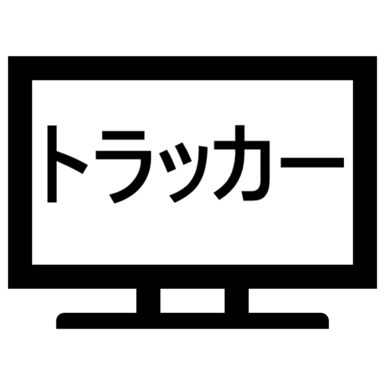
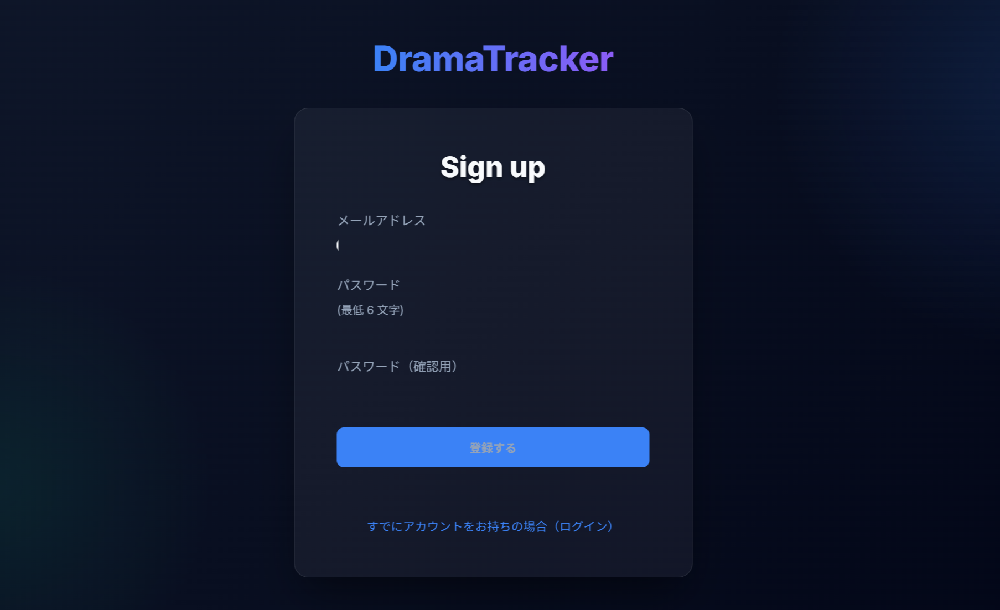
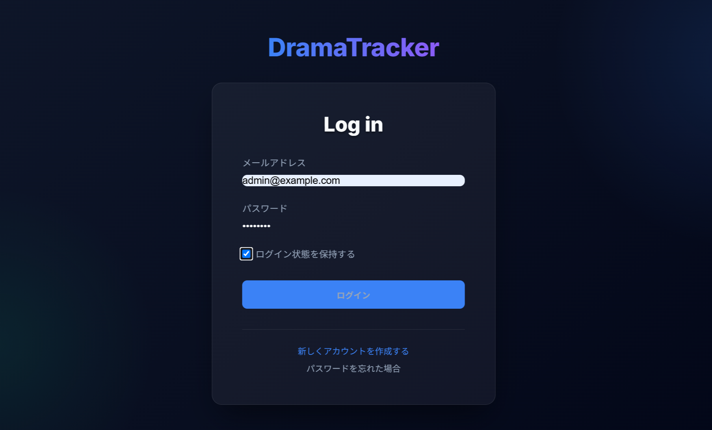
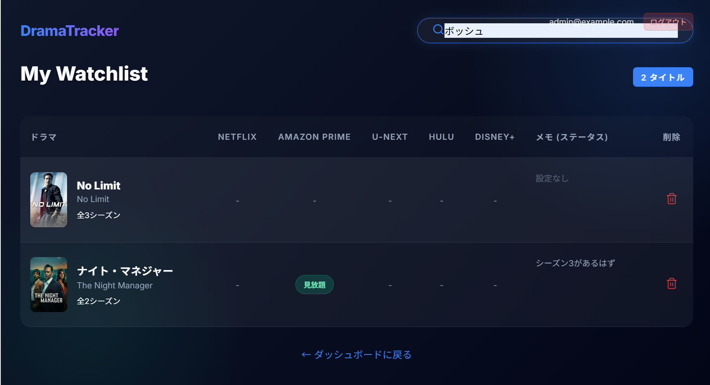
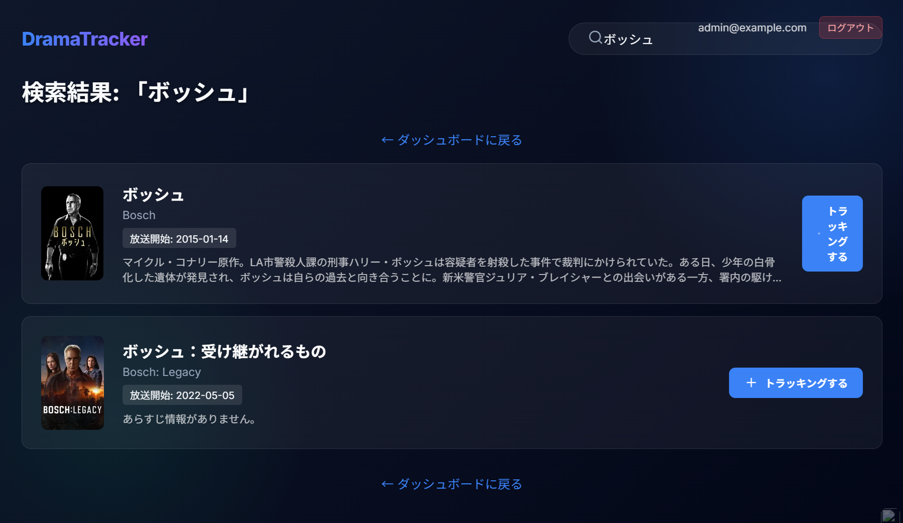
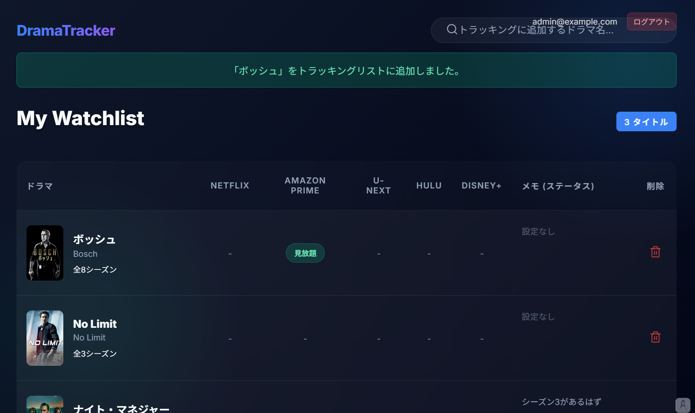
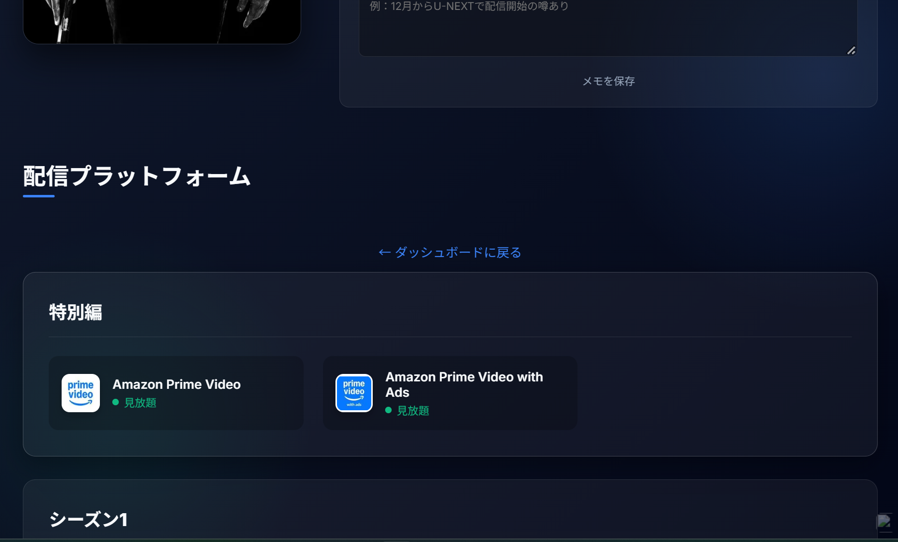
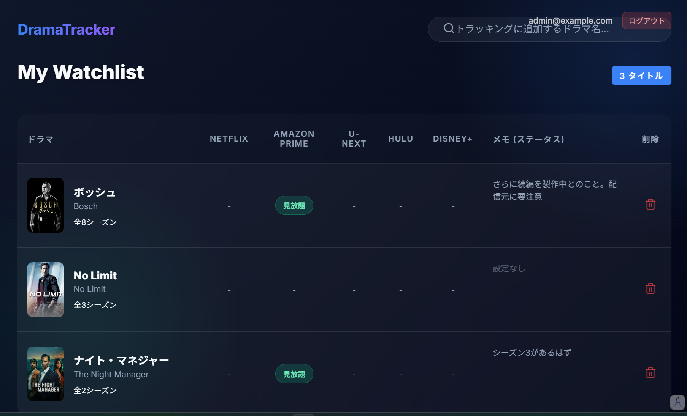

ドラマ・トラッカー
ドラマの配信元を見失うな!
ここで追跡することができます。
人気ドラマはシーズンごとに配信元が変わることがあります。続きを見たいときや前のシーズンを見直したいときに困ってしまいます。そんなときここから配信元を検索し、記録しておくことができます。
TMDB:The Moviedbサイトを利用しています。
配信元に行ってみると、見たいシリーズの取り扱いが表記と異なることがあります。
半公開サーバが脆弱なので個別にご案内しています。

ドラマの配信元を見失うな!
ここで追跡することができます。
人気ドラマはシーズンごとに配信元が変わることがあります。続きを見たいときや前のシーズンを見直したいときに困ってしまいます。そんなときここから配信元を検索し、記録しておくことができます。
TMDB:The Moviedbサイトを利用しています。
配信元に行ってみると、見たいシリーズの取り扱いが表記と異なることがあります。
半公開サーバが脆弱なので個別にご案内しています。







家人がAma...を観ながら「評判のいいドラマはしばらくすると、Ne...やHul...に移ってしまっていて、続きを観るのに苦労するのよ」と愚痴をこぼしているのを聞き、それならなんとかしよう、と。しかし見栄えがよくないと使ってもらえそうにないので、Google AntiGravityくんに頼んでCoooolなのを作ってもらいました。
― 店主 佐々木
使ってみたい方は、こちらからご相談ください。